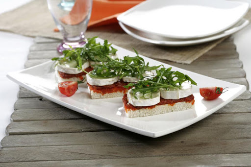
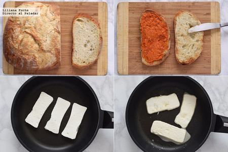

Ingredientes
- 4 rebanadas de pan de molde sin corteza
- 100 gr. de sobrasada mallorquina
- 8 rodajas de rulo que queso de cabra pequeño
- unas hojas de rúcula

Pasos
Primer paso:
Corta cada rebanada de pan en dos mitades y tuéstalas en el horno o tostadora.
Segundo paso:
Unta cada tostada con sobrasada y coloca sobre cada una de ellas un par de rodajas de queso de cabra.
Tercer paso:
dispón unas hojas de rúcula sobre cada tostada y sirve al momento.